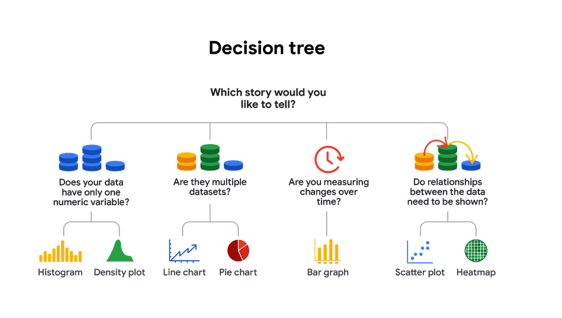

January 1, 2024 by Mark
Install Bootstrap’s source Sass and JavaScript files via npm, RubyGems, Composer, or Meteor. Package managed installs don’t include documentation or our full build scripts.
When you only need to include Bootstrap’s compiled CSS or JS, you can use jsDelivr. See it in action with our simple quick start, or browse the examples to jumpstart your next project. You can also choose to include Popper and our JS separately.
Bootstrap 5 is evolving with each release to better utilize CSS variables for global theme styles, individual components, and even utilities. We provide dozens of variables for colors, font styles, and more at a :root level for use anywhere. On components and utilities, CSS variables are scoped to the relevant class and can easily be modified.
New in Bootstrap 5, our utilities are now generated by our Utility API. We built it as a feature-packed Sass map that can be quickly and easily customized. It's never been easier to add, remove, or modify any utility classes. Make utilities responsive, add pseudo-class variants, and give them custom names. Quickly customize components
Use Bootstrap's utility API to modify any of our included utilities or create your own custom utilities for any project. Import Bootstrap first, then use Sass map functions to modify, add, or remove utilities
Use Bootstrap's utility API to modify any of our included utilities or create your own custom utilities for any project. Import Bootstrap first, then use Sass map functions to modify, add, or remove utilities
Install Bootstrap’s source Sass and JavaScript files via npm, RubyGems, Composer, or Meteor. Package managed installs don’t include documentation or our full build scripts.